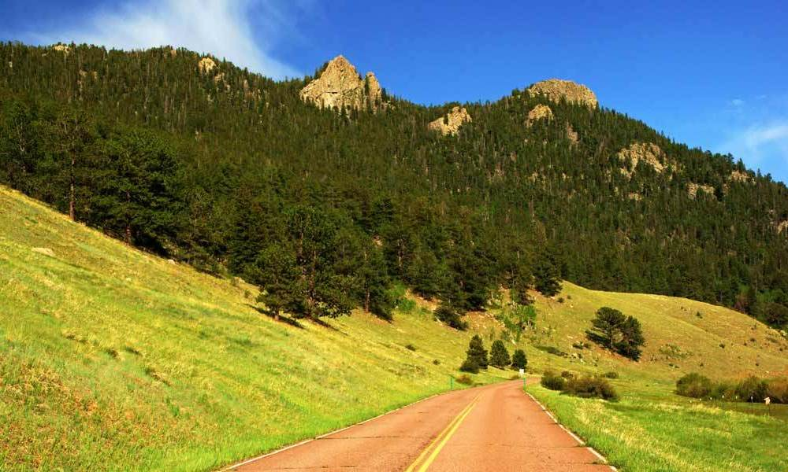
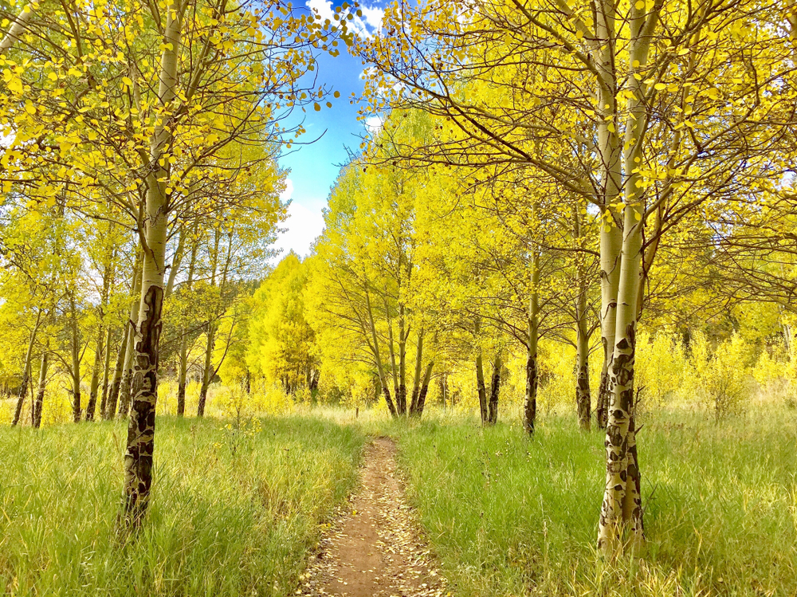

Golden Gate Canyon State Park
Trail
Description:
Dogs are permitted in the campgrounds and on all of the trails at Golden Gate. They must be on a 6-foot leash at all times. Please keep Golden Gate beautiful and pick up after your dog. Thank you! There is NO cell phone or internet service in Golden Gate Canyon State Park. Payphones are located at the Visitor Center and Campground office. Over 35 miles of hiking trails in the park offer pleasures and challenges for everyone. The twelve trails at Golden Gate Canyon are each named after an animal and marked with the animal's footprint. Trail head parking areas are easily accessible from the main roads in the park.
Mountain bikes and horses are permitted in the park on multiple-use trails. Ample parking space for horse trailers is provided at the Nott Creek trail head located near the Red Barn Group Picnic Area and at Kriley Overlook above Kriley Pond.

Trails Lines:
This is the Golden Gate Canyon Trails Map.- Beaver Trail:
Permitted users: Hikers only
Total distance: 2.8 mile loop
Usage: Moderate
Degree of difficulty: Most Difficult
Starting elevation: 8,200 feet
Elevation gain: 1,050 feet
ADA accessible: No
Comments: Starts at Slough Pond. Trail takes you through Aspen groves and open grassy areas. Provides great views of Indian Peaks Wilderness Area, The Continental Divide, and Tremont Mountain. Trail branches off to the Beaver backcountry shelter. - Black Bear Trail:
Permitted users: Hikers only
Total distance: 3.4 miles one way
Usage: High
Degree of difficulty: Most Difficult
Starting elevation: 8,200 feet
Elevation gain: 1,120 feet
ADA accessible: No
Comments: Starts at Ralston Roost trail head. Some bouldering is required at the beginning of the trail, cairns help to mark the trail through this section. The trail reaches a summit at mile 2.25. The trail opens up at Rim Meadow, providing views of Mount Evans and Golden Gate Canyon. Ends at the Mule Deer trail. - Blue Grouse Trail:
Permitted users: Hikers, horse and mountain bike
Total distance: 0.7 miles one way
Usage: High
Degree of difficulty: Moderate
Starting elevation: 8,200 feet
Elevation gain: 700 feet
ADA accessible: No
Comments: Trail head at Kriley Pond Overlook to Mule Deer trail. Passes through a small aspen grove. Good short hike for young children. - Buffalo Trail:
Permitted users: Hikers, horse and mountain bike
Total distance: 1.2 miles one way
Usage: Medium
Degree of difficulty: Moderate
Elevation gain: 510 feet
ADA accessible: No
Comments: Starts at Rifleman Phillips parking area. The trail takes you past several historic buildings, aspen groves, and seasonal streams. It is the access trail for backcountry shelter #3 and the Forgotten Valley backcountry camping area. The trail ends overlooking the Tallman Ranch and Forgotten Valley. Intersects the Mountain Lion trail. -
Burro Trail:
Permitted users: Hikers only
Total distance: 4.5 mile loop
Usage: Moderate
Degree of difficulty: Difficult
Starting elevation: 7,860 feet
Elevation gain: 980 feet
ADA accessible: No
Comments: Begins at Bridge Creek trail head. The trail is shaded by Aspen, Willow, Adler,and Blue Spruce trees. At mile 2.6 you have the option of climbing to Windy Peak, where you have a 360-degree view of the mountains. Trail intersects the Mountain Lion trail. -
Coyote Trail:
Permitted users: Hikers only
Total distance: 2.1 miles one way
Usage: Moderate
Degree of difficulty: Most Difficult
Starting elevation: 8,860 feet
Elevation gain: 600 feet
ADA accessible: No
Comments: Trail head at Bootleg Bottom. This is an access trail to the Frazer, Rim, and Greenfield Meadow backcountry campsites. The trail starts in evergreen forest and scattered aspen groves. This trail has some steep gains, loose rocks near the crest of Promontory Ridge requires caution. Trail opens out at Frazer Meadow. Intersects the Mule Deer trail. -
Horseshoe Trail:
Permitted users: Hikers only
Total distance: 1.8 miles one way
Usage: Very High
Degree of difficulty: Moderate
Starting elevation: 8,140 feet
Elevation gain: 910 feet
ADA accessible: No
Comments: Starts at Frazer Meadow trail head, a short drive from the Visitor Center. This well shaded trail is edged by seasonal streams and is full of wildflowers in the spring and early summer. At mile 1.10 a spur trail leads to Greenfield and Frazer Meadow backcountry camping areas. At mile 1.3 another spur trail takes you to the Rim Meadow backcountry camping area. The trail passes through aspen groves and fern-covered understory. One of our most moderate hikes. Meets the Mule
Deer trail at mile 1.9. -
Mountain Lion Trail:
Permitted users: Hikers, horse and mountain bike
Total distance: 6.7 mile loop
Usage: High
Degree of difficulty: Difficult
Starting elevation: 7,720 feet
Elevation gain: 1,230 feet
ADA accessible: No
Comments: Starts at Nott Creek trail head, off Crawford Gulch Road. The longest trail in the park, Mountain Lion takes you through undulating hills, open meadow, aspen groves, and dense evergreen forests. At mile .6 a service road provides access to the Burro trail. At mile 1.3 follow a steep spur trail for half a mile to the old quarts quarry. Mountain Lion also passes through the Deer Creek backcountry camping area. Take a detour at the Windy Peak (mile 3.6) or City Lights Ridge (mile 5.4) spur trails for 360-degree views of the surrounding mountains. Buffalo trail intersects Mountain Lion at mile 4.7, providing access to the Forgotten Valley backcountry camping area. A challenging ride or hike, with great pay-offs. -
Mule Deer Trail:
Permitted users: Hikers, horse and mountain bike
Total distance: 7.4 mile loop
Usage: Medium
Degree of difficulty: Moderate
Starting elevation: 8,200
Elevation gain: 880 feet
ADA accessible: No
Comments: In 2012, the Elk trail and Mule Deer trail will join up to become one 7.4 mile loop. Starting and ending at the Ole' Barn Knoll trail head, Mule Deer weaves through open meadows, evergreen forest, wildflowers, and aspen groves. Mule Deer intersects the Horseshoe trail at mile 1.85 - this trail provides access to the Frazer, Rim, and Greenfield Meadow backcountry areas. This is a perfect choice for horse riders; park your trailer at the Kriley Overlook, and access Mule Deer via the Blue Grouse trail. Mule Deer intersects the Black Bear trail at mile 1.5, and the Coyote trail at mile 2.05. The trail crosses Gap Road and takes you towards the Raccoon trail and the Reverend’s Ridge Campground. -
Raccoon Trail:
Permitted users: Hikers, horse, and mountain bike
Total distance: 2.5 mile loop
Usage: High
Degree of difficulty: Moderate
Starting elevation: 9,120 feet
Elevation gain: 500 feet
ADA accessible: No
Comments: Trail starts behind the office at the Reverend’s Ridge campground, and passes through blue spruce, douglas fir, and groves of aspen trees, which are brilliant during the fall. Visit Panorama Point and enjoy spectacular views of the Continental Divide, before heading back towards your starting point. -
Snowshoe Hare Trail:
Permitted users: Hikers, horse and mountain bike
Total distance: 3 mile loop
Usage: High
Degree of difficulty: Difficult
Starting elevation: 8,700
Elevation gain: 320 feet
ADA accessible: No
Comments: Trail starts at the Aspen Meadow campground and takes you past Dude’s Fishing Hole - a great place to sink a line and relax . You can extend your hike or ride by following the Mule Deer trail to Panorama Point- follow the spur trail near the end of the loop.